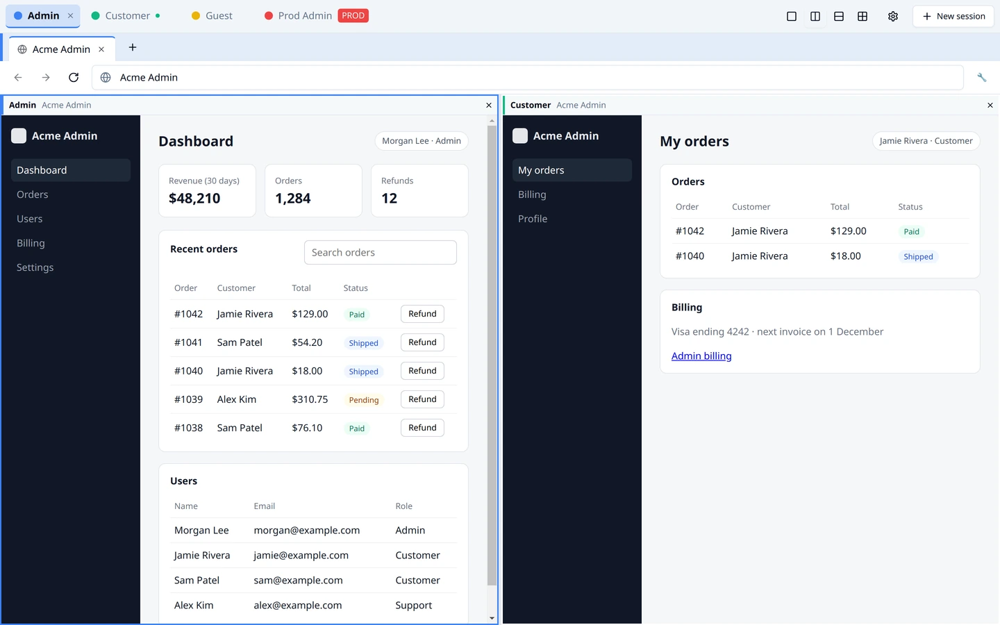

Exploratory QA and filling a test sheet with your agent
Give your agent the test cases, let it walk them in your logged-in SessionForge sessions while you watch, and have it fill in the result for each case.


The workflow
- Prepare the sheet. Write the cases as a list or table in your repo or chat: what to do, as which role, and what should happen. For example "As Customer, open /admin/billing: expect 403".
- Log in once per role. One SessionForge session each, side by side in split view.
- Set access. In Settings → MCP Server / Agent Bridge → Access, give the agent Read for cases that only look, and Control for sessions where it has to click and type.
- Let the agent walk the cases. It opens pages, reads the outline with
snapshot, clicks and types, checks console errors withconsole_logsand compares roles withsend_request_as. You watch it in the panes. - Have it record results. Ask the agent to write pass or fail and a short note next to each case, with a
screenshotas evidence where it helps.
Read or Control
Read lets the agent list sessions, take snapshots and screenshots, read console and network logs, and send GET, HEAD and OPTIONS requests. Control adds opening pages, clicking, typing, selecting and pressing keys. New sessions start at Read, and production sessions stay at Read unless you type the session name to confirm.
If the agent does something you didn't expect, press Stop in the pane header. The session goes back to Read and the running call ends. The activity log in Settings lists every call it made.
Limitations. SessionForge has no built-in test sheet or pass/fail report. The agent writes the results where you tell it to. It can't upload files, download files, run arbitrary JavaScript or look inside cross-origin iframes. Ideas such as a bug bundle with screenshots of all panes, console and network are on the roadmap as Later (evaluating), not shipped.
When to switch to Playwright
Exploratory runs find problems. Once a case matters on every change, write it as a Playwright test and run it in CI, where it repeats exactly and across browsers. See SessionForge vs Playwright.
Walk your next test sheet with an agent
Free and open source for macOS, Windows and Linux.